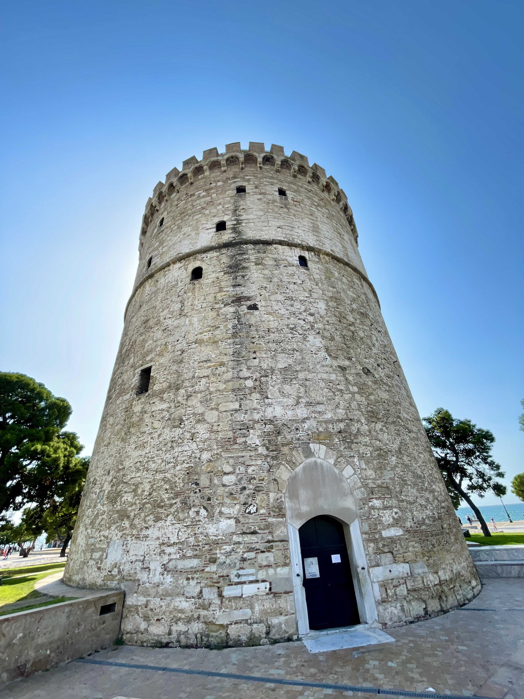
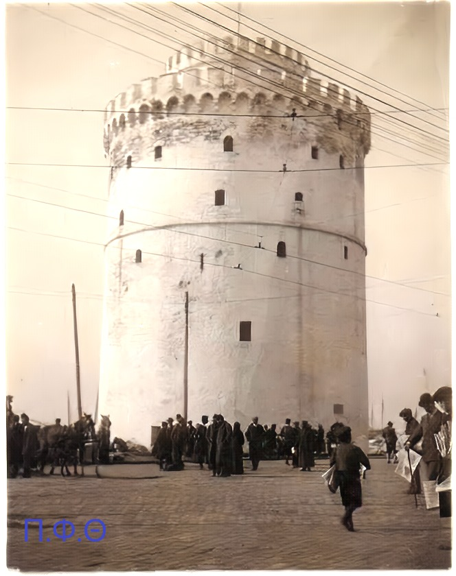

The Thessaloniki "Now and Then" documentary project aims to unveil the captivating transformation of the cityscape by juxtaposing historic photos or videos with their contemporary counterparts. Through a meticulous process of sourcing images from varied sites, we seek to create a visual narrative that not only highlights the architectural evolution of Thessaloniki but also resonates with the rich history embedded in its landmarks.

Our journey begins with the iconic White Tower, a symbol synonymous with Thessaloniki. Originally constructed during the Ottoman period, the White Tower has stood as a silent witness to centuries of history. The juxtaposition of archival images capturing its original splendor and present-day photographs evokes a profound sense of time travel. As you delve into the images, you'll witness the subtle changes in the Tower's surroundings, from the bustling markets of the past to the modern cityscape that now envelops this historic monument.
◁ ▷
Moving on to the Arch of Galerius, another architectural gem that has weathered the ages, we explore the juxtaposition of images capturing its grandeur in different eras. Originally built to commemorate the Roman Emperor Galerius' victory, the arch's majestic reliefs and intricate details come to life as we compare historical images with their contemporary counterparts. The Arch of Galerius serves as a living testament to the city's layered past, where ancient triumphs coexist with the vibrant pulse of the present.
◁ ▷